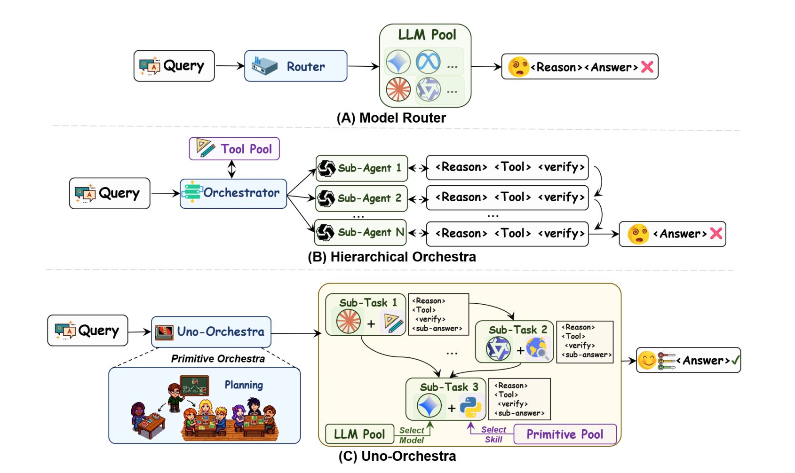

About Me
Hello! I am Haotong Xie (谢昊彤), an undergraduate student at Shanghai University of Finance and Economics (SUFE), majoring in Data Science and Big Data. I currently rank 1st out of 167 in my cohort with a GPA of 92.69/100.
My research lies at the intersection of multi-agent systems, LLM safety alignment, reinforcement learning, and signal processing. I am especially interested in how a single learned controller can coordinate heterogeneous models and tools as one coherent, cost-aware system, and in the safety-relevant failure modes — reward hacking, instruction conflict, response drift — that emerge once such systems are scaled.
I am seeking PhD positions for 2027 Fall and warmly welcome any remote/onsite industrial or research internship. Please feel free to reach out at haotongxieqaq@163.com.
🎓Education
🔍Research Interests
I work across four lines that share one underlying question — how can we make complex AI systems behave reliably under realistic constraints?
Multi-Agent Systems & Agent Routing. I co-led Uno-Orchestra, which collapses task decomposition and per-subtask routing into a single end-to-end RL-trained policy that abstains from decomposing when a query is simple, and dispatches parallel subtasks under an explicit cost budget when it is not.
LLM Safety Alignment. In ELCD we treat the instruction-conflict problem from an energy-based perspective, building a lightweight monitor that catches "response drift" inside the latent space rather than from surface prompt features. In HackBox I co-design a controlled sandbox that reliably reproduces RLVR coding-reward hacking on lab-scale open-source models — three attack surfaces (judge / data / runtime), four difficulty levels (D1–D4), and a detection benchmark.
Signal Processing & Function-Space Learning. In my first first-author paper Adaptive Function Dictionary Learning, I parameterise dictionary atoms as physically meaningful functions rather than abstract vectors, unifying adaptivity and interpretability for non-stationary signal decomposition.
🔥News
- 2026.05 🎉 Our paper Uno-Orchestra: Parsimonious Agent Routing via Selective Delegation is now on arXiv. Co-first author with Zhiqing Cui — we reach 77.0% macro pass@1 across 13 benchmarks at ~10× lower cost than the strongest workflow baseline.
- 2026.04 📝 Our paper ELCD on energy-based latent conflict detection passed the first-round review at IJCAI 2026.
- 2025.12 🛠️ Started HackBox — a controllable sandbox for reproducing coding-reward hacking in RLVR post-training. Targeting EMNLP 2026.
- 2025.11 🥉 Won a bronze medal at ARC Prize 2025 (rank 118 / 1456 teams worldwide) as team captain.
- 2025.10 🏆 Awarded the National Scholarship (¥10,000) and the SUFE People's Scholarship — Special Grade.
📚Publications
★ project lead · † equal contribution

Uno-Orchestra: Parsimonious Agent Routing via Selective Delegation
A unified orchestration policy that jointly learns task decomposition and per-subtask (model, primitive) routing from a single causal-LM, trained with verifier-gated SFT followed by Agentic-GRPO — a multi-turn extension of GRPO with turn-level credit assignment. Reaches 77.0% macro pass@1 on a 13-benchmark suite, ~16% above the strongest workflow baseline at roughly an order of magnitude lower per-query cost.
ELCD: Energy-Driven Latent Conflict Detection for LLM Instruction Hierarchies
We frame instruction-hierarchy conflict in LLMs through an energy-based model lens. ELCD extracts a composite feature (last-token instantaneous representation + global mean-pooled response) and projects it to a scalar energy score; a pairwise margin ranking loss then forces compliant responses into low-energy basins and drifted ones into high-energy plateaus. The result is a lightweight plug-in monitor that catches "response drift" inside the latent space — without adding inference latency to the host LLM.
HackBox: A Controllable Sandbox for Reproducing RLVR Coding Reward Hacking
A research framework for studying coding-reward hacking in RLVR post-training, on lab-scale open-source models. We systematise the attack space into three surfaces (judge / data / runtime) and four difficulty levels (D1–D4), build a toxic-SFT data synthesis pipeline with three concealment modes (direct / mid-solve hack / fake-solve hack), and release a detection benchmark grounded in real RL rollouts to evaluate mainstream LLM monitors.
Beyond Static Bases: Adaptive Function Dictionary Learning for Signal Decomposition
We introduce Adaptive Function Dictionary Learning, which parameterises dictionary atoms as physically meaningful functions rather than abstract vectors — unifying adaptivity with interpretability for non-stationary signal decomposition. The framework consists of a hierarchical function dictionary (smooth sub-dictionary for low-frequency trends, spike sub-dictionary for transients), a signal-segmentation router, an attention modulator with per-region basis-selection networks, and a sparse training objective that enforces minimal-atom decomposition.
🏅Competition Highlight
Few-Shot Visual Logic Solver via Masked Diffusion & Adaptive Reasoning
Built a verifier-guided masked-diffusion solver for the Abstraction and Reasoning Corpus (ARC). Key contributions: (i) a dynamic curriculum based on logical-atom complexity and masking ratio, progressing from monochrome fills to compositional rule transformations; (ii) a non-autoregressive masked-diffusion language model with 2D positional priors for symmetry and connectivity reasoning; (iii) an energy-based cross-example consistency verifier that guides denoising trajectories at inference time without weight updates. Ranked 118th out of 1456 teams worldwide, earning a bronze medal.
🏆Honors and Awards
- 2025 Bronze Medal · ARC Prize 2025 (Global, 118 / 1456 teams) International
- 2025 National Second Prize · Chinese Mathematics Competition (CMC) National
- 2025 Shanghai Second Prize · China Undergraduate Mathematical Contest in Modeling Provincial
- 2024 Shanghai Second Prize · China Undergraduate Mathematical Contest in Modeling Provincial
- 2025 Shanghai Second Prize · "Zhengda Cup" Market Research Analysis Contest Provincial
- 2025 Shanghai Third Prize · National Statistical Modeling Contest Provincial
- 2025 National Scholarship · Ministry of Education of China (¥10,000) National
- 2025 SUFE People's Scholarship · Special Grade School
- 2024–25 SUFE Merit Student (two consecutive years) School